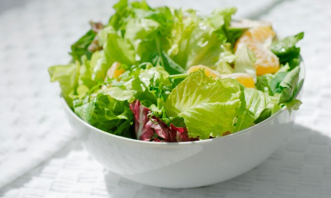
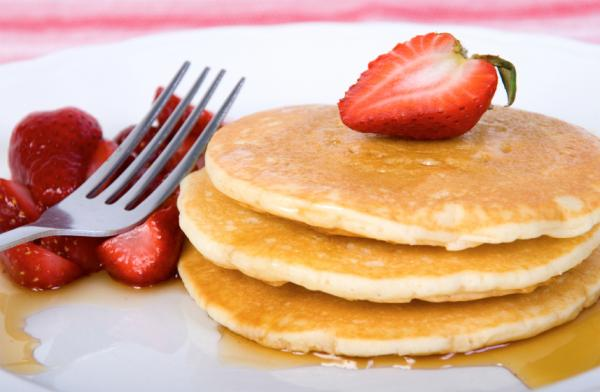
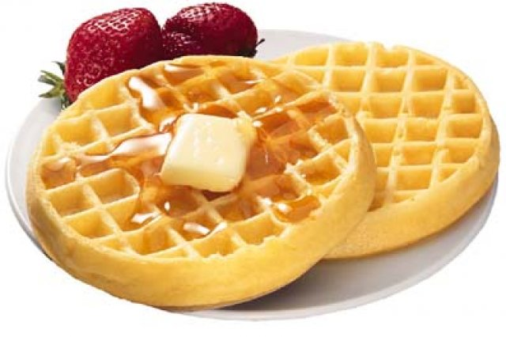

Ingredientes para 2 personas:
5 huevos (separar la clara de la yema en 2 tazones)
1 cucharada de mantequilla o margarina, dividida en dos partes
sal y pimienta molida
1.Derrite la mitad de la mantequilla a baja temperatura en la sartén.
2. Batir ligeramente la clara de huevo con un tenedor 10 a 12 veces.
3. Vierte la clara de huevo en la sartén y revuelve constantemente con una cuchara de madera. Separa constantemente lo que se pega a las paredes y el fondo.
4 Retirar del fuego, sazonar, añadir el cebollino y la segunda parte de la mantequilla. Servir de inmediato.

200 gramos de rúgula lavada y desinfectada
150 gramos Champiñones lavados y fileteados
Un poco de aceite de oliva
Un poco de vinagre de frutas
Sal y pimienta al gusto
½ taza de queso parmesano
Preparación:
Comienza por sofreír en una sartén con un poco de mantequilla los champiñones, luego,
en un tazón mézclalos con la rúgula, y el queso parmesano. Finaliza salpimentando
y agregando el aceite y el vinagre al gusto.

Ingredientes
3 Huevos
2 Tazas leche o 1/2 litros de leche
250 gr harina
Salen aprox. 20 panqueques
Pasos
Paso 1: Ponemos los tres huevos con 1 taza de leche lo batimos y ponemos la otra taza de leche.
Paso 2: Colamos la harina así queda sin pelo titas.
Paso 3: Obtenemos la mezcla de "Paso 1" y le vamos agregando la Harina en forma de lluvia (sin dejar de revolver)
Paso 4: Batimos hasta dejar una mezcla homogénea, sin grumos.

Ingredientes
2 tazas Harina
1/4 taza Azúcar
1 cucharadita Polvo para hornear
1 cucharadita Sal
1 1/2 tazas Leche
1 cucharada Esencia de vainilla
2 Yemas
2 Claras de huevo batidas a punto de turrón
8 cucharadas Mantequilla fundida
Pasos
Coloca en un tazón la harina, el azúcar, el polvo para hornear y la sal. Reserva.
Mezcla en otro tazón las yemas, la vainilla y la leche. Integra y reserva.
Mezcla los ingredientes secos con las claras
Añade la preparación anterior y la mantequilla.
Mezcla de forma envolvente.